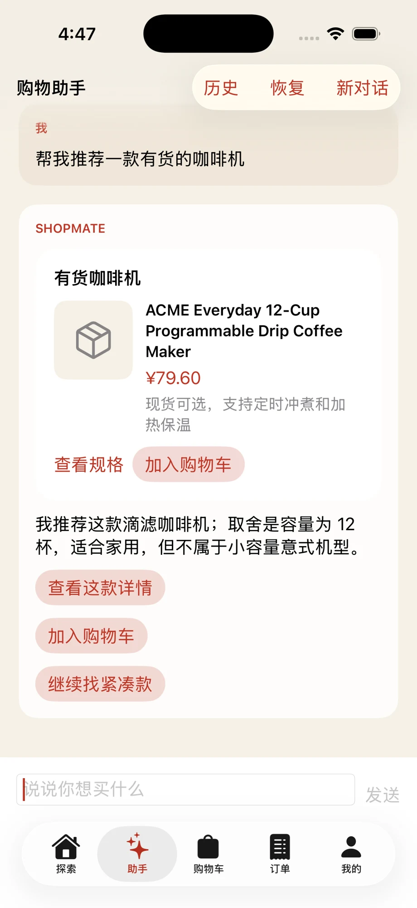
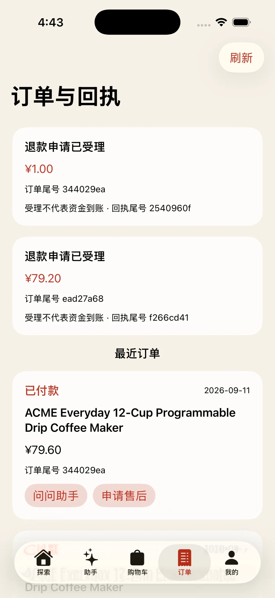
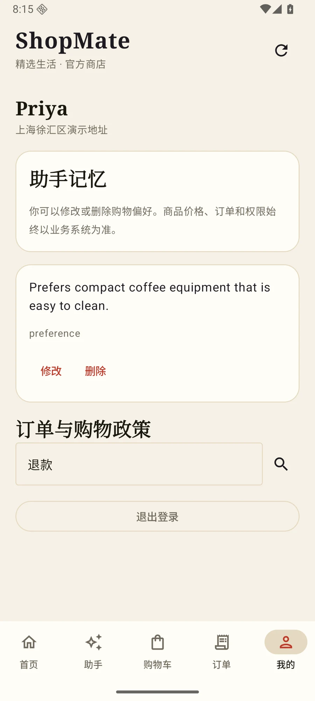
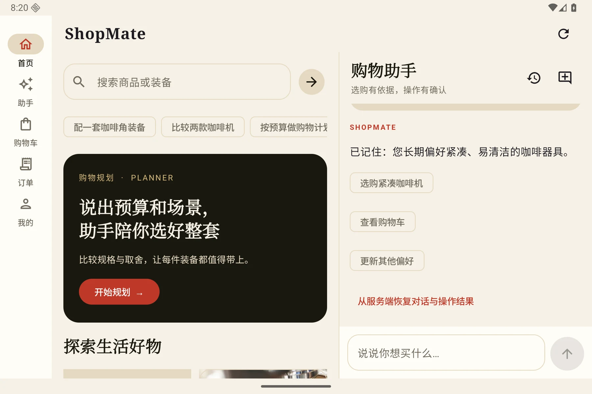
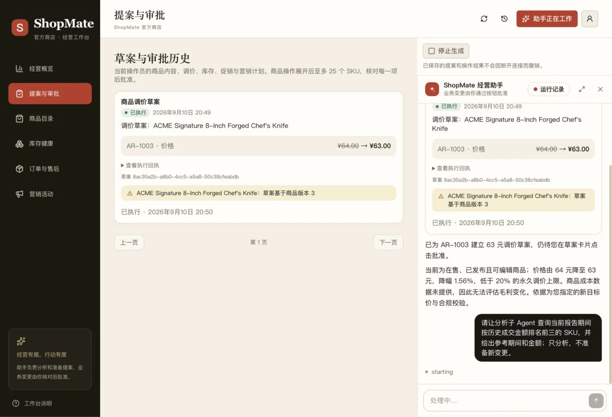

从预算和使用场景出发，查询商品、比较规格，把推荐组织成可以继续操作的卡片。
商品查询 · 对比与规划 · 详情上下文一间商店 · 两种视角
选购有灵感。
经营有把握。
好物不必反复找，
好主意也能有下一步。
ShopMate 把购物、对话和经营连在一起。
助手帮你整理选择，重要的决定留给你。
ANDROID ／ iOS ／ WEB

先了解，再选择。规格、价格、取舍，一起看清。
从「我想要」到「就这个」。
把对话放进生活，而不只是聊天框。01 / THE BUYER EXPERIENCE
从一句话，
到一份确定的选择。
有目标时直接选购，拿不准时问问助手。
同一份购物车，同一笔真实订单。


iOS · 实际运行界面
下单前核对报价，退款前核对金额。执行后看得到状态和回执，中断后也能重新核对原操作。
报价确认 · 订单与售后 · 原请求恢复紧凑一点，容易清洁一点。偏好可以留下，也可以查看、修改或删除；价格和订单始终向商店查询。
可管理的记忆 · 历史对话 · 自主选择以上为 Android / iOS 本地实际运行截图，随滚动切换，也可点击标题浏览。交易演示使用模拟支付。
MORE ROOM. SAME CONVERSATION.
屏幕变大，
思路不必打断。
在手机上随手问，
在宽屏里一边看商品、一边继续聊。

02 / THE MERCHANT WORKSPACE
看清经营，
从容行动。
让数据解释变化，让助手准备方案。
从分析到提案，再到批准执行，
每一步都有清楚的落点。

分析实际经营数据
经营助手与只读分析子 Agent 协作，查询报表，解释变化。
把建议变成可核对提案
商品、库存、调价和营销操作，先把变更内容摆在眼前。
批准之后，记录结果
由操作员批准，业务后端校验版本并执行，保留可查看的回执。
THOUGHTFUL INSIDE, TOO.
顺手的背后，
是清楚的分工。
体验留在原生。
Compose 与 SwiftUI 各自照顾平台交互；KMP 共享流式协议、卡片归并和原请求恢复规则。
助手有能力，也有边界。
Skills、上下文与记忆配合搜索和分析沙箱；任务预算约束执行，重要写入需要确认。
交易交给可靠的后端。
CityBuddy 承担身份、库存、订单和账务。普通购物与对话分离，秒杀直接接入交易服务。
Android / iOS / Web↔ShopMate Agent↔CityBuddy 交易与身份
给生活一点灵感。
给每个决定一份把握。